1. Колебания
ПредисловиеГлава 1. Собственные гармонические колебания
1.1. Механические гармонические колебания
1.2. Зависимость амплитуды и начальной фазы колебаний от начальных условий
1.3. Свободные гармонические колебания в LC-контуре
1.4. Графическое изображение гармонических колебаний. Векторная диаграмма
Глава 2. Сложение гармонических колебаний
2.1. Сложение гармонических колебаний одного направления
2.2. Сложение взаимно перпендикулярных колебаний
Глава 3. Затухающие колебания
3.1. Механические затухающие колебания
3.2. Электромагнитные затухающие колебания
3.3. Характеристики затухающих колебаний
Глава 4. Вынужденные колебания
4.1. Общие признаки вынужденных механических и электромагнитных колебаний
4.2. Зависимости амплитуды вынужденных колебаний и сдвига фаз от частоты внешнего воздействия. Резонанс
Приложения
Приложение 1
Приложение 2
1. Колебания
Предисловие
В данной методической разработке колебания и волны – чрезвычайно обширная область физических явлений. Колебания (в механических и электромагнитных системах), волны (упругие и электромагнитные) - это учебный материал, который необходим для изучения специальных технических дисциплин в электротехническом ВУЗе.
Изучение колебаний начинается с изучения механических колебаний в различных механических колебательных системах. Использование электромеханических аналогий позволяет изучать электромагнитные колебания с точки зрения общих признаков колебаний, объединяя поведение механических и электромагнитных систем. Затем рассматриваются колебания связанных систем. Методически правильно и удобно начать изучение колебательных процессов с довольно простых систем с небольшим числом степеней свободы, а затем перейти к системам с бесконечно большим числом степеней свободы, какими являются волны.
Волны на воде, сейсмические, звуковые, световые, радиоволны – это далеко не все волновые процессы в природе. Главная цель данной разработки – ознакомление студентов с основными идеями, общими для всех волновых явлений, т.е. и для электромагнитных, и для упругих волн.
Некоторые вопросы прикладного характера или вопросы, связанные с уточнением применяемого математического аппарата, вынесены в приложения.
В конце работы приведен список литературных источников, из которых [1-3] - учебники, рекомендованные для ВУЗов, [4-6] – дополнительная литература по разделу “Колебания и волны”, [7-9] – справочники, [10-15] – методические разработки кафедры.
КОЛЕБАНИЯ
1. Колебательными процессами (колебаниями) называются движения или изменения состояния, обладающие той или иной степенью повторяемости во времени.
Колебания называются периодическими, если значения физических величин, изменяющиеся в процессе колебаний, повторяются через равные промежутки времени Т, называемые периодом. Математически это записывается так:
.
2. В зависимости от физической природы и механизма возбуждения колебаний различают:
- механические колебания (колебания маятников, струн, балок, частей машин и механизмов, качка кораблей, волнение моря, колебания давления при распространении звука в газе, жидкости, твердом теле и т.д.);
- электромагнитные колебания (переменный ток, колебания тока, заряда, векторов E и H в колебательных контурах и т.д.);
- электромеханические колебания (колебания мембран телефонов, диффузоров электродинамических громкоговорителей и т.д.).
3. Колебательные движения отличаются от других видов движений. Они характеризуются некоторыми общими признаками. На языке теории колебаний различия между колебательным движением тела и процессами в колебательных электромагнитных контурах исчезают, если подходить к ним с точки зрения общих принципов. Такой подход называется электромеханическими аналогиями.
4. Система, совершающая колебания, называется колебательной системой.
Колебания, которые возникают вследствие какого-либо начального отклонения системы от ее устойчивого равновесия, называются собственными колебаниями.
Колебания, возникающие в системе под влиянием переменного внешнего воздействия, называются вынужденными колебаниями.
5. Общие признаки и понятия, единые для различных колебательных систем, следующие:
- дифференциальное уравнение (его вид одинаков для любых колеблющихся систем);
- уравнение колебаний;
- амплитуда;
- частота или период колебаний;
- фаза;
- начальная фаза.
Рассмотрим колебания в механической и электромагнитной системах, выделяя именно перечисленные выше признаки.
Глава 1. Собственные гармонические колебания
1.1. Механические гармонические колебания
1. В качестве механической колебательной системы, на примере которой мы будем рассматривать колебания, выбираем пружинный маятник: маленькое тело (материальная точка) массой m подвешено на пружине с жесткостью k (Рисунок 2).
Ненагруженная пружина имела длину l0. Когда подвесили тело, пружина удлинилась на ∆l. Возникшая упругая сила уравновесила силу тяжести . Это соотношение позволяет определить положение равновесия пружинного маятника. Если теперь тело сместить относительно положения равновесия на расстояние х, то на тело будет действовать сила упругости и сила тяжести.
Равнодействующая этих сил равна:
.
Знак минус означает, что направление силы Fупр. и направление смещения х противоположны. Fупр. - сила упругости, возникающая при смещении тела относительно положения равновесия за счет сжатия или растяжения пружины (в зависимости от того, в какую сторону от положения равновесия отклонено тело). Качественно на Рисунке 1.1 виден результат действия упругой силы ( чем больше смещение, тем больше Fупр.).

Рисунок 1.1 – Положения пружинного маятника за время одного периода колебаний.
Если система совершает колебания под действием сил, развивающихся в самой колебательной системе без внешних воздействий и без учета сил сопротивления, то колебания называются незатухающими собственными колебаниями.
Отсутствие затухания колебаний характерно для идеальной колебательной системы, которая является физической моделью реальных физических процессов.
2. Дифференциальное уравнение, соответствующее колебаниям пружинного маятника, можно получить из закона его движения, которым является 2-й закон Ньютона ma = F.
Учитывая, что ускорение есть вторая производная от смещения по времени
,
а сила, действующая на тело, есть сила упругости, определяемая для малых смещений тела от положения равновесия по закону Гука, как , получим
или
.
Это дифференциальное уравнение второго порядка для незатухающих колебаний. Основной его отличительной особенностью является тот факт, что вторая производная от смещения по времени (т.е. ускорение) пропорциональна смещению. Дифференциальное уравнение, в которое величина х входит в нулевой или первой степени, называется линейным дифференциальным уравнением. В дальнейшем мы покажем, что подобного рода уравнения характерны для незатухающих колебаний в любой идеальной колебательной системе.
Перенесем все члены уравнения в левую часть и приведем дифференциальное уравнение к виду:
Величина , обозначим ее , получим
3. Решением дифференциального уравнения такого вида являются уравнения:
 или
или
Эти решения называются уравнениями колебаний, они позволяют вычислить смещение х пружинного маятника в любой момент времени.
Колебания, при которых характеризующие их физические величины изменяются по закону синуса или косинуса, называются гармоническими.
Отличие аргументов функций синуса и косинуса составляет  , т.е. .
, т.е. .
В дальнейшем чаще всего мы будем использовать решение дифференциального уравнения в виде  .
.
4. В уравнении колебаний:
А – амплитуда смещения – максимальное отклонение маятника от положения равновесия;
х – смещение маятника, т.е. отклонение колеблющейся точки (тела) от положения равновесия в момент времени t;
– фаза колебаний – величина, определяющая положение колеблющейся точки в любой момент времени t;
α – начальная фаза определяет положение маятника в начальный момент времени (t = 0).
Периодом T называется наименьший интервал времени, за который система возвращается в исходное положение. За период колебаний система совершает одно полное колебание.
Частотой периодических колебаний называется величина , равная числу колебаний, совершаемых за единицу времени.
Циклической или круговой частотой периодических колебаний называется величина , равная числу колебаний, совершаемых за единиц времени.
Для пружинного маятника частота и период собственных колебаний в зависимости от параметров системы имеют вид:
, .
5. Зная уравнение смещения пружинного маятника, получим подобные уравнения для других физических величин. Найдем скорость, ускорение, энергию колебаний, если уравнение смещения пружинного маятника задано в виде  .
.
Скорость колебаний маятника есть первая производная по времени от смещения:
.
Величина Аω0 называется амплитудой скорости. Амплитуда – величина положительная (по определению).
Ускорение маятника:
 .
.
Величина Аω02 – амплитуда ускорения. И смещение, и ускорение маятника изменяются по закону косинуса, но отличаются, кроме амплитуды, еще и знаком. Направление ускорения совпадает с направлением упругой силы.
6. Так как собственные колебания в идеальной системе происходят без внешних воздействий, то колебательная система является замкнутой и для нее выполняется закон сохранения механической энергии.
Полная механическая энергия пружинного маятника равна:
.
Потенциальная энергия материальной точки, гармонически колеблющейся под действием упругой силы, равна:
Кинетическая энергия пружинного маятника равна
Полная энергия колебаний пружинного маятника равна
Частота изменений кинетической и потенциальной энергии в 2 раза больше частоты изменения смещения, скорости и ускорения. Соответственно период изменения этих видов энергии .
Графики физических величин в зависимости от времени представлены на Рисунке 1.2 в пределах двух периодов колебаний (начальная фаза взята равной нулю α = 0).
Рисунок 1.2 – Графики смещения (х), скорости (v), ускорения (а) в зависимости от времени t
1.2. Зависимость амплитуды и начальной фазы колебаний от начальных условий
Решения дифференциального уравнения колебаний определены с точностью до постоянной величины, поэтому таких решений бесчисленное множество. Выбор решения для данной конкретной колебательной системы можно сделать, если задать ее поведение в начальный момент времени, то есть начальные условия. Например, если просто отклонить маятник, растянув пружину, а затем спокойно отпустить его, или отклонить, а затем подтолкнуть маятник, то движения маятника будут различными. Рассмотрим зависимость параметров колебательной системы от начальных условий.
Пусть при t = 0 смещение системы от положения равновесия равно х0, а начальная скорость v0. Гармоническое колебание описывается уравнением .
При t = 0 имеем два уравнения:
, .
Возведя в квадрат оба уравнения и сложив их, получим уравнение для амплитуды:
.
Поделив одно уравнение на другое, получим соотношение для начальной фазы:
.
Таким образом, и амплитуда, и начальная фаза колебаний зависят от начальных условий колебательной системы.
1.3. Свободные гармонические колебания в LC-контуре
1. Электромагнитный контур состоит из плоского конденсатора емкостью С и катушки индуктивности (соленоида) с индуктивностью L. Такой контур называется идеальным контуром с распределенными параметрами. Конденсатор зарядили, на одной пластине заряд +q, на другой (–q). Рассмотрим процессы в LC – контуре за время T, называемое периодом колебаний.
Момент времени t = 0. Конденсатор заряжен, ключ “К” разомкнут, ток в контуре не идет:
I = 0, ,
Ключ замкнут, по цепи идет ток разрядки до тех пор, пока не выровняются потенциалы обкладок конденсатора. При
Когда конденсатор разрядится, ток разрядки прекратится. Магнитное поле в катушке индуктивности, не поддерживаемое током, начнет уменьшаться. Уменьшение магнитного поля вызовет уменьшение магнитного потока сквозь площадь катушки, возникнет ЭДС индукции. По цепи контура пойдет индукционный ток того же направления, что и ток разрядки (правило Ленца). Это приведет к перезарядке конденсатора. При 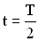 
Направление тока разрядки в контуре изменится. Ток разрядки будет идти по цепи до выравнивания потенциалов на обкладках конденсатора.
При 
При t = T система вернется в исходное положение.
В рассмотренном LC – контуре происходит превращение энергии из одного вида в другой и обратно, полная энергия контура - величина постоянная .
Периодические изменения вектора напряженности Е электрического поля и вектора магнитной индукции В магнитного поля в закрытом колебательном LC – контуре называется электромагнитными колебаниями.
2. Используем 2-й закон Кирхгофа для получения дифференциального уравнения электромагнитных колебаний.
Для любого замкнутого контура алгебраическая сумма падений напряжений на всех его участках равна алгебраической сумме ЭДС, действующих в этом контуре (2-ой закон Кирхгофа).
Падение напряжения на обкладках конденсатора в LC – контуре равно
где q – величина заряда на обкладках, С – емкость конденсатора. ЭДС индукции, возникающая в катушке индуктивности при изменении тока в ней, определяется формулой: (закон Фарадея для самоиндукции).
(закон Фарадея для самоиндукции).
Второй закон Кирхгофа для LC – контура имеет вид:
или .
По определению сила тока равна первой производной по времени от заряда , тогда .
Преобразуем уравнение 2-ого закона Кирхгофа, получим
Обозначим , получим окончательно уравнение вида:
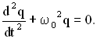
Это линейное дифференциальное уравнение второго порядка, решениями которого являются уравнения:
или .
И дифференциальное уравнение для электромагнитных колебаний, и его решения подобны тем, которые получены для механической системы (пружинного маятника).
Величины, входящие в уравнения электромагнитных колебаний, имеют следующий смысл:
q0 – амплитуда заряда – максимальный заряд конденсатора;
q – величина заряда на обкладках конденсатора в момент времени t;
 – фаза колебаний – величина, определяющая заряд конденсатора в любой момент времени t;
– фаза колебаний – величина, определяющая заряд конденсатора в любой момент времени t;
α – начальная фаза определяет заряд конденсатора в начальный момент времени (t = 0).
Циклической частотой периодических колебаний в LC – контуре является величина .
Период колебаний равен (формула Томсона).
Определим зависимость силы тока, ЭДС и энергии колебаний от времени в LC – контуре. Уравнение изменения заряда на обкладках конденсатора возьмем в виде:
Сила тока в контуре определяется соотношением:
.
Величину 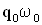 называют амплитудой силы тока.
Уравнение для ЭДС имеет вид:
 .
.
Величина  – амплитуда ЭДС.
– амплитуда ЭДС.
Электрическая и магнитная энергия изменяется согласно уравнениям:
Полная энергия колебаний в LC - контуре не зависит от времени (закон сохранения энергии).
Графики зависимостей от времени t физических величин, характеризующих электромагнитных колебаний в LC – контуре, аналогичны графикам для механических колебаний (см. Рисунок 1.2).
Если заряд на обкладках изменяется по закону , т.е. начальная фаза α = 0, то его график такой же как график смещения.
Напряжение между обкладками конденсатора изменяется по тому же закону, что и заряд конденсатора, только амплитуда напряжения будет другой .
Изменение силы тока аналогично изменению скорости тела при механических незатухающих колебаниях. Wэл. изменяется как Wпот., а Wмагн. - как Wкин..
1.4. Графическое изображение гармонических колебаний. Векторная диаграмма
Решение многих вопросов в теории колебаний значительно упрощается, если использовать графический метод изображения гармонических колебаний в виде векторов на плоскости. Такое изображение называется векторной диаграммой колебаний (Рисунок 1.3).
Рисунок 1.3 – Векторная диаграмма гармонического колебаний .
Последовательность построения векторной диаграммы колебания, заданного уравнением , такова:
- Выберем на плоскости ось Х, на ней возьмем точку О – начало координат.
- Под углом α, равном начальной фазе колебаний, к оси Х, из точки О откладываем вектор, равный по длине амплитуде А колебаний.
- Вектор А равномерно вращаем вокруг точки О против часовой стрелки с угловой скоростью, равной циклической частоте колебаний.
Тогда в любой момент времени угол вектора А с осью Х равен  . Соответственно проекция конца вектора А на ось Х будет совершать колебания по закону , а сама проекция вектора А в любой момент времени будет равна смещению х колеблющейся точки от положения равновесия. Если начальная фаза колебаний , то в начальный момент времени вектор А откладываем из точки О вдоль направления оси Х.
. Соответственно проекция конца вектора А на ось Х будет совершать колебания по закону , а сама проекция вектора А в любой момент времени будет равна смещению х колеблющейся точки от положения равновесия. Если начальная фаза колебаний , то в начальный момент времени вектор А откладываем из точки О вдоль направления оси Х.
Глава 2. Сложение гармонических колебаний
Одно и то же тело может одновременно участвовать в двух и более движениях. Простым примером является движение шарика, брошенного под углом к горизонту. Можно считать, что шарик участвует в двух независимых взаимно перпендикулярных движениях: равномерном по горизонтали и равнопеременном по вертикали. Одно и то же тело (материальная точка) может участвовать в двух (и более) движениях колебательного типа.
Под сложением колебаний понимают определение закона результирующего колебания, если колебательная система одновременно участвует в нескольких колебательных процессах. Различают два предельных случая – сложение колебаний одного направления и сложение взаимно перпендикулярных колебаний.
2.1. Сложение гармонических колебаний одного направления
1. Сложение двух колебаний одного направления (сонаправленных колебаний)
можно провести с помощью метода векторных диаграмм (Рисунок 9) вместо сложения двух уравнений.
На Рисунке 2.1 показаны векторы амплитуд А1(t) и А2(t) складываемых колебаний в произвольный момент времени t, когда фазы этих колебаний соответственно равны и . Сложение колебаний сводится к определению . Воспользуемся тем фактом, что на векторной диаграмме сумма проекций складываемых векторов равна проекции векторной суммы этих векторов.
Результирующему колебанию соответствует на векторной диаграмме вектор амплитуды и фаза .
Рисунок 2.1 – Сложение сонаправленных колебаний.
Величина вектора А(t) может быть найдена по теореме косинусов:
.
Фаза результирующего колебания задается формулой:
.
Если частоты складываемых колебаний ω1 и ω2 не равны, то и фаза φ(t), и амплитуда А(t) результирующего колебания будут изменяться с течением времени. Складываемые колебания называются некогерентными в этом случае.
2. Два гармонических колебания x1 и x2 называются когерентными, если разность их фаз не зависит от времени:
.
Но так как  , то для выполнения условия когерентности двух этих колебаний должны быть равны их циклические частоты .
, то для выполнения условия когерентности двух этих колебаний должны быть равны их циклические частоты .
Амплитуда результирующего колебания, полученного при сложении сонаправленных колебаний с равными частотами (когерентных колебаний) равна:
.
Начальную фазу результирующего колебания легко найти, если спроектировать векторы А1 и А2 на координатные оси ОХ и ОУ (см. Рисунок 9):
.
Итак, результирующее колебание, полученное при сложении двух гармонических сонаправленных колебаний с равными частотами, также является гармоническим колебанием .
3. Исследуем зависимость амплитуды результирующего колебания от разности начальных фаз складываемых колебаний.
Если , где n – любое целое неотрицательное число
(n = 0, 1, 2…), то  , т.е. результирующая амплитуда будет минимальной. Складываемые колебания в момент сложения находились в противофазе. При результирующая амплитуда равна нулю .
, т.е. результирующая амплитуда будет минимальной. Складываемые колебания в момент сложения находились в противофазе. При результирующая амплитуда равна нулю .
Если , то  , т.е. результирующая амплитуда будет максимальной. В момент сложения складываемые колебания находились в одной фазе, т.е. были синфазны. Если амплитуды складываемых колебаний одинаковы , то .
, т.е. результирующая амплитуда будет максимальной. В момент сложения складываемые колебания находились в одной фазе, т.е. были синфазны. Если амплитуды складываемых колебаний одинаковы , то .
4. Сложение сонаправленных колебаний с неравными, но близкими частотами.
Частоты складываемых колебаний не равны , но разность частот  много меньше и ω1, и ω2. Условие близости складываемых частот записывается соотношениями
много меньше и ω1, и ω2. Условие близости складываемых частот записывается соотношениями  .
.
Примером сложения сонаправленных колебаний с близкими частотами является движение горизонтального пружинного маятника, жесткость пружин которого немного различна k1 и k2.
Пусть амплитуды складываемых колебаний одинаковы, а начальные фазы равны нулю . Тогда уравнения складываемых колебаний имеют вид:
, .
Результирующее колебание описывается уравнением:
.
Получившееся уравнение колебаний зависит от произведения двух гармонических функций: одна – с частотой , другая – с частотой , где ω близка к частотам складываемых колебаний (ω1 или ω2). Результирующее колебание можно рассматривать как гармоническое колебание с изменяющейся по гармоническому закону амплитудой. Такой колебательный процесс называется биениями. Строго говоря, результирующее колебание в общем случае не является гармоническим колебанием.
Абсолютное значение косинуса взято потому, что амплитуда – величина положительная. Характер зависимости хрез.при биениях показан на Рисунке 2.2.
Рисунок 2.2 – Зависимость смещения от времени при биениях.
Амплитуда биений медленно меняется с частотой . Абсолютное значение косинуса повторяется, если его аргумент изменяется на π, значит и значение результирующей амплитуды повторится через промежуток времени τб, называемый периодом биений (см. Рисунок 12). Величину периода биений можно определить из следующего соотношения:
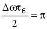.
Величина - период биений.
Величина есть период результирующего колебания (Рисунок 2.4).
2.2. Сложение взаимно перпендикулярных колебаний
1. Модель, на которой можно продемонстрировать сложение взаимно перпендикулярных колебаний, представлена на Рисунке 2.3. Маятник (материальная точка массой m) может совершать колебания по осям ОХ и ОУ под действием двух сил упругости, направленных взаимно перпендикулярно.
Рисунок 2.3
Складываемые колебания имеют вид:
.
Частоты колебаний определяются как , , где , -коэффициенты жесткости пружин.
2. Рассмотрим случай сложения двух взаимно перпендикулярных колебаний с одинаковыми частотами , что соответствует условию (одинаковые пружины). Тогда уравнения складываемых колебаний примут вид:
Когда точка участвует одновременно в двух движениях, ее траектория может быть различной и достаточно сложной. Уравнение траектории результирующего колебаний на плоскости ОХУ при сложении двух взаимно перпендикулярных с равными частотами можно определить, исключив из исходных уравнений для х и y время t:
.
Вид траектории определяется разностью начальных фаз складываемых колебаний, которые зависят от начальных условий (см. § 1.1.2). Рассмотрим возможные варианты.
а) Если , где n = 0, 1, 2…, т.е. складываемые колебания синфазные, то уравнение траектории примет вид:
(Рисунок 2.3 а).
|
Рисунок 2.3.а |
Рисунок 2.3 б |
б) Если (n = 0, 1, 2 …), т.е. складываемые колебаний находятся в противофазе, то уравнение траектории записывается так:
(Рисунок 2.3б).
В обоих случаях ( а, б) результирующее движение точки будет колебание по прямой, проходящей через точку О. Частота результирующего колебания равна частоте складываемых колебаний ω0, амплитуда определяется соотношением:
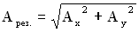.
Угол, который прямая (траектория) составляет с осью ОХ, можно найти из уравнения:
(знак “плюс” – случай а, знак “минус” – случай б).
Результатом сложения взаимно перпендикулярных колебаний (случай а и б) является колебание, которое называется линейно поляризованным.
в) Если (n = 0, 1, 2 …), то уравнение траектории результирующего движения примет вид:
.
Это уравнение эллипса, его оси совпадают с осями координат ОХ и ОУ, а размеры его полуосей равны и 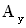 (Рисунок 2.4 ).
Рисунок 2.4
Точка в результате участия в двух взаимно перпендикулярных колебаниях описывает эллипс за время, равное периоду складываемых колебаний .
3. Сложение взаимно перпендикулярных колебаний с кратными частотами.
Складываются взаимно перпендикулярные колебания, частоты которых не равны , но ,  , где a и b – целые числа.
, где a и b – целые числа.
Периоды колебаний вдоль осей ОХ и ОУ соответственно равны и . Отношение периодов .
Траектория точки, участвующей во взаимно перпендикулярных колебаниях с кратными частотами, - замкнутая кривая, форма которой зависит от соотношения амплитуд, частот и начальных фаз складываемых колебаний. Такие замкнутые траектории называются фигурами Лиссажу.
Глава 3. Затухающие колебания
Затуханием колебаний называется постепенное уменьшение амплитуды колебаний с течением времени, обусловленное потерей энергии колебательной системой.
Собственные колебания без затухания – это идеализация. Причины затухания могут быть разные. В механической системе к затуханию колебаний приводит наличие трения. В электромагнитном контуре к уменьшению энергии колебаний приводят тепловые потери в проводниках, образующих систему. Когда израсходуется вся энергия, запасенная в колебательной системе, колебания прекратятся. Поэтому амплитуда затухающих колебаний уменьшается, пока не станет равной нулю.
Затухающие колебания, как и собственные, в системах, разных по своей природе, можно рассматривать с единой точки зрения – общих признаков. Однако, такие характеристики, как амплитуда и период, требуют переопределения, а другие – дополнения и уточнения по сравнению с такими же признаками для собственных незатухающих колебаний. Общие признаки и понятия затухающих колебаний следующие:
Дифференциальное уравнение должно быть получено с учетом убывания в процессе колебаний колебательной энергии.
Уравнение колебаний – решение дифференциального уравнения.
Амплитуда затухающих колебаний зависит от времени.
Частота и период зависят от степени затухания колебаний.
Фаза и начальная фаза имеют тот же смысл, что и для незатухающих колебаний.
3.1. Механические затухающие колебания
Механическая система: пружинный маятник с учетом сил трения.
Силы, действующие на маятник:
Упругая сила. , где k – коэффициент жесткости пружины, х – смещение маятника от положения равновесия.
Сила сопротивления. Рассмотрим силу сопротивления, пропорциональную скорости v движения (такая зависимость характерна для большого класса сил сопротивления): . Знак “минус” показывает, что направление силы сопротивления противоположно направлению скорости движения тела. Коэффициент сопротивления r численно равен силе сопротивления, возникающей при единичной скорости движения тела:
Закон движения пружинного маятника – это второй закон Ньютона:
ma = Fупр. + Fсопр.
Учитывая, что и , запишем второй закон Ньютона в виде:
.
Разделив все члены уравнения на m, перенеся их все в правую часть, получим дифференциальное уравнение затухающих колебаний:
Обозначим , где β – коэффициент затухания,  , где ω0 – частота незатухающих свободных колебаний в отсутствии потерь энергии в колебательной системе.
, где ω0 – частота незатухающих свободных колебаний в отсутствии потерь энергии в колебательной системе.
В новых обозначениях дифференциальное уравнение затухающих колебаний имеет вид:
.
Это линейное дифференциальное уравнение второго порядка.
Уравнение затухающих колебаний есть решение такого дифференциального уравнения:
.
В приложении 1 показано получение решения дифференциального уравнения затухающих колебаний методом замены переменных.
Частота затухающих колебаний:
(физический смысл имеет только вещественный корень, поэтому ).
Период затухающих колебаний:
.
Смысл, который вкладывался в понятие периода для незатухающих колебаний, не подходит для затухающих колебаний, так как колебательная система никогда не возвращается в исходное состояние из-за потерь колебательной энергии. При наличии трения колебания идут медленнее: .
Периодом затухающих колебаний называется минимальный промежуток времени, за который система проходит дважды положение равновесия в одном направлении.
Для механической системы пружинного маятника имеем:
, .
Амплитуда затухающих колебаний:
, для пружинного маятника .
Амплитуда затухающих колебаний – величина не постоянная, а изменяющаяся со временем тем быстрее, чем больше коэффициент β. Поэтому определение для амплитуды, данное ранее для незатухающих свободных колебаний, для затухающих колебаний надо изменить.
При небольших затуханиях амплитудой затухающих колебаний называется наибольшее отклонение от положения равновесия за период.
Графики зависимости смещения от времени и амплитуды от времени представлены на Рисунках 3.1 и 3.2.
Рисунок 3.1 – Зависимость смещения от времени для затухающих колебаний.
Рисунок 3.2 – Зависимости амплитуды от времени для затухающих колебаний
3.2. Электромагнитные затухающие колебания
Электромагнитные затухающие колебания возникают в электромагнитной колебательной систему, называемой LCR – контур (Рисунок 3.3).
Рисунок 3.3.
Дифференциальное уравнение получим с помощью второго закона Кирхгофа для замкнутого LCR – контура: сумма падений напряжения на активном сопротивлении (R) и конденсаторе (С) равна ЭДС индукции, развиваемой в цепи контура:
Падение напряжения:
- на активном сопротивлении: , где I – сила тока в контуре;
- на конденсаторе (С): , где q – величина заряда на одной из обкладок конденсатора.
ЭДС, развиваемая в контуре – это ЭДС индукции, возникающая в катушке индуктивности при изменении тока в ней, а следовательно, и магнитного потока сквозь ее сечение: (закон Фарадея).
Подставим значения UR, UC, в уравнение, отражающее закон Кирхгофа, получим:
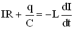.
Сила тока определяется как производная от заряда  , тогда
, тогда  , и дифференциальное уравнение примет вид:
, и дифференциальное уравнение примет вид:
.
Обозначим ,  , получим в этих обозначениях дифференциальное уравнение затухающих колебаний в виде:
, получим в этих обозначениях дифференциальное уравнение затухающих колебаний в виде:
Решение дифференциального уравнения или уравнение колебаний для заряда на обкладках конденсатора имеет вид:
или
.
Амплитуда затухающих колебаний заряда имеет вид:
, где .
Частота затухающих колебаний в LCR – контуре:
.
Период затухающих электромагнитных колебаний:
.
Возьмем уравнение для заряда в виде  , тогда уравнение для напряжения на обкладках конденсатора можно записать так
, тогда уравнение для напряжения на обкладках конденсатора можно записать так
.
Величина называется амплитудой напряжения на конденсаторе.
Ток в контуре меняется со временем. Уравнение для силы тока в контуре можно получить, используя соотношение  и векторную диаграмму.
и векторную диаграмму.
Окончательное уравнение для силы тока таково:
,
где  - начальная фаза.
- начальная фаза.
Она не равна α, так как сила тока изменяется не по синусу, что дала бы производная от заряда, а по косинусу.
Энергия колебаний в контуре складывается из энергии электрического поля
и энергии магнитного поля
Полная энергия в любой момент времени:
где W0 – полная энергия контура в момент времени t=0.
3.3. Характеристики затухающих колебаний
1. Коэффициент затухания β.
Изменение амплитуды затухающих колебаний происходит по экспоненциальному закону:
 .
.
Пусть за время τ амплитуда колебаний уменьшится в “e ” раз (“е” – основание натурального логарифма, е ≈ 2,718). Тогда, с одной стороны, , а с другой стороны, расписав амплитуды Азат.(t) и Азат.(t+τ), имеем . Из этих соотношений следует βτ = 1, отсюда
.
Промежуток времени τ, за который амплитуда уменьшается в “е” раз, называется временем релаксации.
Коэффициент затухания β – величина, обратно пропорциональная времени релаксации.
2. Логарифмический декремент затухания δ - физическая величина, численно равная натуральному логарифму отношения двух последовательных амплитуд, отстоящих по времени на период .

Если затухание невелико, т.е. величина β мала, то амплитуда незначительно изменяется за период, и логарифмический декремент можно определить так:
,
где Азат.(t) и Азат.(t+NT) – амплитуды колебаний в момент времени е и через N периодов, т.е.в момент времени (t + NT).
3. Добротность Q колебательной системы – безразмерная физическая величина, равная произведению величины (2π) νа отношение энергии W(t) системы в произвольный момент времени к убыли энергии за один период затухающих колебаний:
.
Так как энергия пропорциональна квадрату амплитуды, то
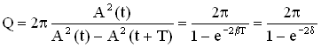.
При малых значениях логарифмического декремента δ добротность колебательной системы равна
,
где Ne – число колебаний, за которое амплитуда уменьшается в “е” раз.
Так, добротность электромагнитной системы LCR – контура при малом затухании колебаний равна 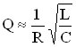, а добротность пружинного маятника - .Чем больше добротность колебательной системы, тем меньше затухание, тем дольше будет длиться периодический процесс в такой системе.
4. При увеличении коэффициента β, частота затухающих колебаний уменьшает-ся, а период увеличивается. При ω0 = β частота затухающих колебаний становится равной нулю ωзат. = 0, а Тзат. = ∞. При этом колебания теряют периодический характер и называются апериодическими.
При ω0 = β параметры системы, ответственные за убывание колебательной энергии, принимают значения, называемые критическими. Для пружинного маятника условие ω0 = β запишется так:, откуда найдем величину критического коэффициента сопротивления:
.
Для LCR – контура условие позволяет вычислить критическое сопротивление контура, при котором колебания потеряют свою периодичность:
.
Глава 4. Вынужденные колебания
До сих пор мы изучали процессы в механических системах под действием сил, развивающихся в самих системах. Каково будет поведение колебательных систем, к которым тем или иным способом приложена внешняя сила? Для электромагнитного контура аналогичная ситуация возникнет, если в цепь контура включить внешний источник ЭДС.
Рассмотрим явление колебаний, если внешняя (вынуждающая) сила или внешняя ЭДС изменяется в зависимости от времени по гармоническому закону. При этом в системах возникнут колебания, характер которых в той или иной мере повторит характер вынуждающей силы или ЭДС источника. Такие колебания называются вынужденными.
Рассматривая свободные колебания в механической и электромагнитной системах, мы убедились в полной аналогии законов колебаний. Такое же сходство наблюдали для механических и электромагнитных затухающих колебаний. Следует ожидать аналогии законов в механической и электромагнитной системах и при вынужденных колебаниях.
4.1. Общие признаки вынужденных механических и электромагнитных колебаний
1. Рассмотрим вынужденные механические колебаний пружинного маятника, на который действует внешняя (вынуждающая) периодическая сила . Силы, которые действуют на маятник, однажды выведенный из положения равновесия, развиваются в самой колебательной системе. Это сила упругости и сила сопротивления .
Закон движения (второй закон Ньютона) запишется следующим образом:
.
Разделим обе части уравнения на m, учтем, что  , и получим дифференциальное уравнение вынужденных колебаний:
, и получим дифференциальное уравнение вынужденных колебаний:
.
Обозначим (β – коэффициент затухания),  (ω0 – частота незатухающих свободных колебаний), сила, действующая на единицу массы. В этих обозначениях дифференциальное уравнение вынужденных колебаний примет вид:
(ω0 – частота незатухающих свободных колебаний), сила, действующая на единицу массы. В этих обозначениях дифференциальное уравнение вынужденных колебаний примет вид:
.
Это дифференциальное уравнение второго порядка с правой частью, отличной от нуля. Решение такого уравнения есть сумма двух решений
.
– общее решение однородного дифференциального уравнения, т.е. дифференциального уравнения без правой части, когда она равна нулю. Такое решение нам известно – это уравнение затухающих колебаний, записанное с точностью до постоянной, значение которой определяется начальными условиями колебательной системы:
, где .
Мы обсуждали ранее, что решение может быть записано через функции синуса.
Если рассматривать процесс колебаний маятника через достаточно большой промежуток времени Δt после включения вынуждающей силы (Рисунок 22), то затухающие колебания в системе практически прекратятся. И тогда решением дифференциального уравнения с правой частью будет решение .
Решение - это частное решение неоднородного дифференциального уравнения, т.е. уравнения с правой частью. Из теории дифференциальных уравнений известно, что при правой части, изменяющейся по гармоническому закону, решение будет гармонической функцией (sin или cos) с частотой изменения, соответствующей частоте Ω изменения правой части:
,
где Аампл. – амплитуда вынужденных колебаний, φ0 –сдвиг фаз, т.е. разность фаз между фазой вынуждающей силы и фазой вынужденных колебаний. И амплитуда Аампл., и сдвиг фаз φ0 зависят от параметров системы (β, ω0) и от частоты вынуждающей силы Ω.
Период вынужденных колебаний равен .
График вынужденных колебаний на Рисунке 4.1.
Рисунок 4.1 – График вынужденных колебаний.
2.Электромагнитные вынужденные колебания.
Электромагнитная система, в которой развиваются вынужденные колебания, - это LCR – контур с включенным в него внешним источником. Рассмотрим случай, когда ЭДС источника изменяется по гармоническому закону:
.
Конденсатор, как рассматривалось ранее, заряжен и при его разрядке в контуре будет идти изменяющийся по времени электрический ток, что вызовет появление в катушке индуктивности ЭДС индукции ( ). Согласно второму закону Кирхгофа имеем:
). Согласно второму закону Кирхгофа имеем:
,
где UC, UR – соответственно падение напряжения на конденсаторе и активном сопротивлении.
Учитывая, что , где I – сила тока в контуре, , где q – величина заряда на одной из обкладок конденсатора, - ЭДС индукции, запишем закон Кирхгофа в виде:
.
Записывая соотношения  и , и преобразуя уравнение для закона Кирхгофа, мы получим дифференциальное уравнение вынужденных электромагнитных колебаний в виде:
и , и преобразуя уравнение для закона Кирхгофа, мы получим дифференциальное уравнение вынужденных электромагнитных колебаний в виде:
Окончательно дифференциальное уравнений (при использовании обозначений ,  ) примет вид:
) примет вид:
.
Вид дифференциального уравнения вынужденных электромагнитных колебаний такой же, как и вид дифференциального уравнения для вынужденных колебаний в механической системе. Это дифференциальное уравнение второго порядка с правой частью, поэтому все, что говорилось относительно его решений для механических колебаний верно и для электромагнитной системы. Сначала в системе возникнут и затухающие, и вынужденные колебания, но спустя некоторый промежуток времени, переходный процесс закончится и в системе установятся вынужденные колебаний с той же частотой, что и частота изменения ЭДС источника:
.
φ0 - сдвиг фаз между изменением заряда конденсатора и действием внешней ЭДС источника.
4.2. Зависимости амплитуды вынужденных колебаний и сдвига фаз от частоты внешнего воздействия. Резонанс
1. Вернемся к механической системе пружинного маятника, на который действует внешняя сила, изменяющаяся по гармоническому закону. Для такой системы дифференциальное уравнение и его решение соответственно имеют вид:
, .
Проанализируем зависимость амплитуды колебаний и сдвига фаз от частоты внешней вынуждающей силы, для этого найдем первую и вторую производную от х и подставим в дифференциальное уравнение.
,
,
Воспользуемся методом векторной диаграммы. Из уравнения видно, что сумма трех колебаний в левой части уравнения (Рисунок 4.1) должна быть равна колебанию в правой части. Векторная диаграмма выполнена для произвольного момента времени t. Из нее можно определить .
Рисунок 4.1
,
.
Учитывая значение ,  ,, получим формулы для φ0 и Аампл. механической системы:
,, получим формулы для φ0 и Аампл. механической системы:
,
.
2. Исследуем зависимость амплитуды вынужденных колебаний от частоты вынуждающей силы и величины силы сопротивления в колеблющейся механической системе, по этим данным построим график . Результаты исследования отражены в Рисунке 4.2, по ним видно, что при некоторой частоте вынуждающей силы амплитуда колебаний резко возрастает. И это возрастание тем больше, чем меньше коэффициент затухания β. При амплитуда колебаний становится бесконечно большой .
Явление резкого возрастания амплитуды вынужденных колебаний при частоте вынуждающей силы, равной , называется резонансом.
Кривые на Рисунке 4.2 отражают зависимость и называются амплитудными резонансными кривыми.
Рисунок 4.2 – Графики зависимости амплитуды вынужденных колебаний от частоты вынуждающей силы.
3. Используем данные об амплитуде и сдвиге фаз вынужденных колебаний для механической системы и выразим эти же характеристики для аналогичных величин электромагнитной системы (LCR– контур с включенным в его цепь внешним источником ЭДС, величина которой изменяется по гармоническому закону):
,
.
5. Сила тока при установившихся в контуре колебаниях равна:
,
где - амплитуда силы тока, ψ0 – сдвиг фаз между силой тока и внешнейЭДС в контуре. Амплитуда силы тока и ψ0 находятся по формулам:
,
, .
График зависимости представлен на Рисунке 4.3.
Рисунок 4.3
Приложения
Приложение 1
Решение дифференциального уравнения затухающих колебаний.
Дифференциальное уравнение затухающих колебаний имеет вид:
.
Это линейное дифференциальное уравнение решается заменой переменных. Представим функцию х, зависящую от времени t, в виде:
.
Найдем первую и вторую производную этой функции от времени, учитывая, что функция z также является функцией времени:
, 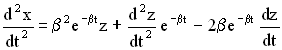.
Подставим выражения в дифференциальное уравнение:
.
Приведем подобные члены в уравнении и сократим каждый член на , получим уравнение:
.
Обозначим величину .
Решением уравнения являются функции , .
Возвращаясь к переменной х, получим формулы уравнений затухающих колебаний:
.
Приложение 2
Акустические единицы.
Хотя Международная система единиц рекомендуется для всех областей науки и техники, в акустике широкое применение сохранила система СГС. Ниже мы приводим важнейшие акустические величины в СИ и даем их связь с системой СГС.
Таблица 2 -Объективные характеристики механических волновых процессов.
|
Величина и ее обозначение |
Уравнение для определения единицы измерения |
Единица измерения |
Сокращенное обозначение |
|
Частота |
Гц |
||
|
Звуковое давление р |
ньютон на квадратный метр (паскаль) |
||
|
Плотность звуковой энергии |
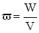 |
джоуль на кубический метр |
|
|
Поток звуковой энергии (звуковая мощность) |
ватт |
Вт |
|
|
Интенсивность звука I |
Ватт на квадратный метр |
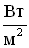 |
В таблице 3 приведены некоторые акустические единицы системы СГС и их связь с единицами СИ.
Таблица 3.
|
Величина |
Единица измерения и ее связь с единицами СИ |
|
Звуковое давление |
|
|
Плотность звуковой энергии |
|
|
Звуковая мощность |
|
|
Интенсивность звука |
|
Для характеристики величин, определяющих восприятие звука, существенными являются не столько абсолютные значения интенсивности звука и звукового давления, сколько их отношение к некоторым пороговым значениям. Поэтому вводятся понятие относительных уровней интенсивности и звукового давления.
Для того, чтобы звуковая волна воспринималась на слух, необходимо, чтобы ее интенсивность превышала бы минимальную величину, называемую порогом слышимости. Величина различная для разных частот. Для частоты 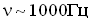 порог слышимости составляет величину порядка. Опытом установлено, что на каждой частоте есть верхняя граница силы звука , при превышении которого у человека возникают болевые ощущения. Величина называется порогом болевого ощущения.
Уровень интенсивности (уровень силы звука) равен десятичному логарифму отношения интенсивности звука при данной частоте к интенсивности звука при той же частоте на пороге слышимости:
.
Уровень громкости равен десятичному логарифму отношения интенсивности звука при данной частоте к интенсивности звука при частоте 1000 Гц на пороге слышимости:
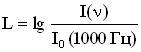.
Единицей измерения уровня интенсивности является бел (Б): . Одна десятая часть бела называется децибел (дБ): 0,1Б = 1дБ. Формула для определения уровня интенсивности в децибелах примет вид:
.
Если записать формулу для уровня громкости в виде , то единицей измерения в СИ при таком определении величины является, единица, имеющая название фон. При частоте 1000 Гц шкала фонов и децибел совпадают, для других частот они различны.
Уровень звукового давления равен произведению 20 на логарифм отношения звукового давления при данной частоте к звуковому давлению на пороге слышимости. Единицей измерения в данном случае является децибел.
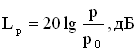.